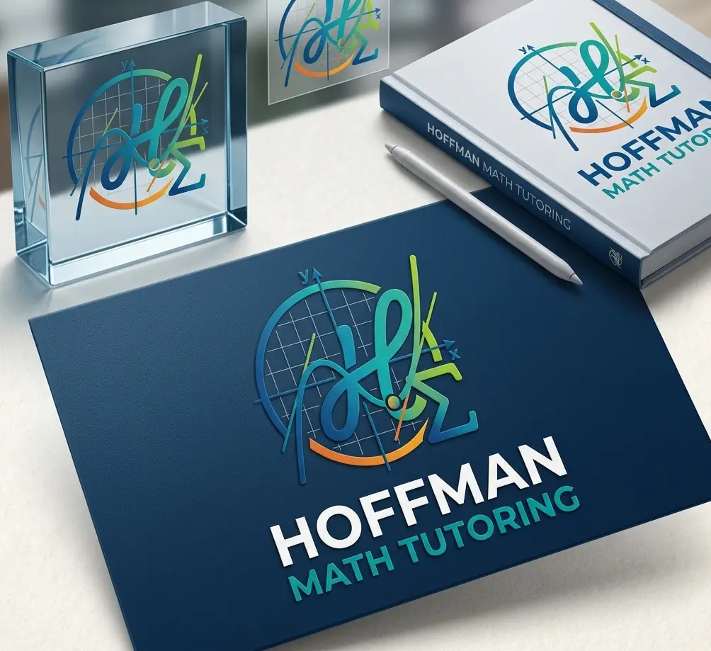

Let's Take Math Steps Together For Success
At Hoffman Remote Tutoring, we bridge the gap between classroom instruction, remote learning, and digital mastery. Backed by over a decade of certified public school teaching experience, our programs are engineered to build genuine conceptual confidence.
We combine rigorous curriculum standards with advanced diagnostic tools to deliver personalized instruction that ensures students master state benchmarks and excel on exams.
Our personalized online tutoring provides focused preparation for the ASVAB and GED, along with support in test-taking strategies and classroom mathematics—from foundational arithmetic through Algebra, Geometry, and Precalculus. We use diagnostic tools to identify each person's strengths and weaknesses, so we can focus our time on what actually needs to be learned. From there, we work through the material step by step, filling in gaps, strengthening core skills, and building a better understanding of the subject. Whether you're preparing for the ASVAB, working toward a GED, or a student who needs help with classroom math, the goal is simple: understand the material and be better prepared for the test or class.
Book a Lesson →Personalized GED math instruction designed around your current skill level, with a clear, step-by-step path to passing your exam.
Master the math, verbal, and technical concepts needed to conquer the ASVAB and secure your military career using proven tools.
Structured review strategies eliminate exam anxiety while building lasting student confidence, from everyday classroom quizzes to pivotal state evaluations.
We provide dedicated curriculum support for Pre-Algebra, Algebra, Geometry, and Precalculus by mirroring the material your student uses in class.
Founder
Hi, I am the founder of Hoffman Remote Tutoring. I graduated summa cum laude from the University of Missouri with a Bachelor's degree in mathematics, and I am a certified math teacher in multiple states. With over fourteen years of classroom and remote teaching experience, my focus has consistently been on student success.
I have extensive experience teaching and tutoring secondary students from 6th grade through high school. My background includes middle school math, advanced eighth-grade Pre-AP Algebra, and the full high school curriculum of Algebra 1, Geometry, Algebra 2, Trigonometry, and Pre-Calculus.
My professional history includes five years of teaching in Dallas, Texas, and seven years in Missouri classrooms.
After transitioning from full-time classroom instruction, I spent years remotely teaching and tutoring for school districts throughout the United States, partnering with various companies to supply quality instruction. I have received various teacher awards.
Today, as the owner of Hoffman Remote Tutoring, I bring that diverse professional experience directly to students. I am dedicated to providing quality instruction tailored to each learner's specific needs. Whether it is foundational middle school math, advanced high school courses, or preparing adults for the ASVAB or GED, my goal is to help each learner reach their academic goals.
Knowledgeable and Patient Teacher
"Outstanding Math tutor and Mentor." William has been truly wonderful for my son, Lucas. He has not only helped him strengthen his math skills but has also given him more confidence and helped him achieve a high score on his math placement for the IB program. He has done a fantastic job reviewing Algebra 1 and is now moving into geometry. What has meant the most to us is that William is so much more than a tutor. He is genuine teacher who has helped Lucas learn to focus, work through challenges, and really understand the logic and structure of math. His patience, dedication, and ability to connect with Lucas have made a real difference. We are especially grateful that William will continue working with Lucas during the school year, as his guidance and input are so valuable. We could not be more thankful for his support and would highly recommend him to any family.
"Knowledgeable and patient teacher." We are very impressed with the tutor's teaching approach and materials. The materials prepared were of great quality. My child has not only learned a lot but has also developed a deeper interest in the subject!
"Excellent Geometry Tutor." William was an excellent geometry tutor for my daughter. He was patient, knowledgeable, and explained every concept in a way that was easy for her to understand. She consistently commented on how clear his explanations were, which really helped build her confidence and improve her understanding of the material. He was always professional, supportive, and willing to answer questions until she fully grasped the topic. I highly recommend William to anyone looking for a knowledgeable and effective math tutor.
"Excellent teaching methods." Explained concepts perfectly and then confirmed understanding through demonstrated knowledge in applying them to problems. We will definitely continue to work with William.
